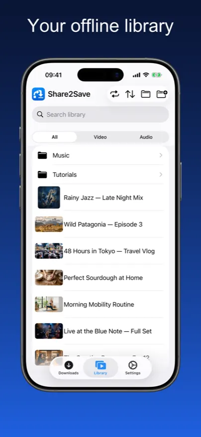
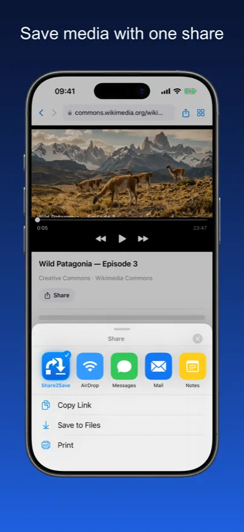
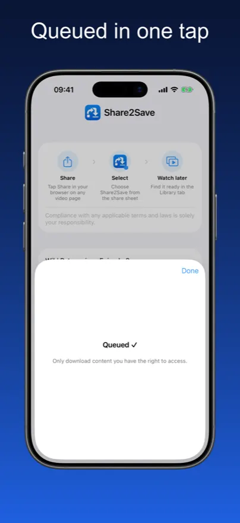
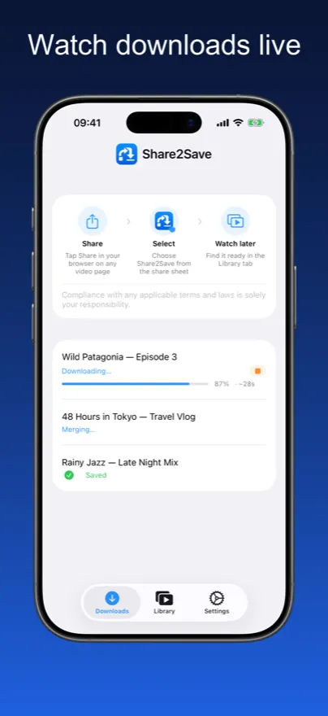
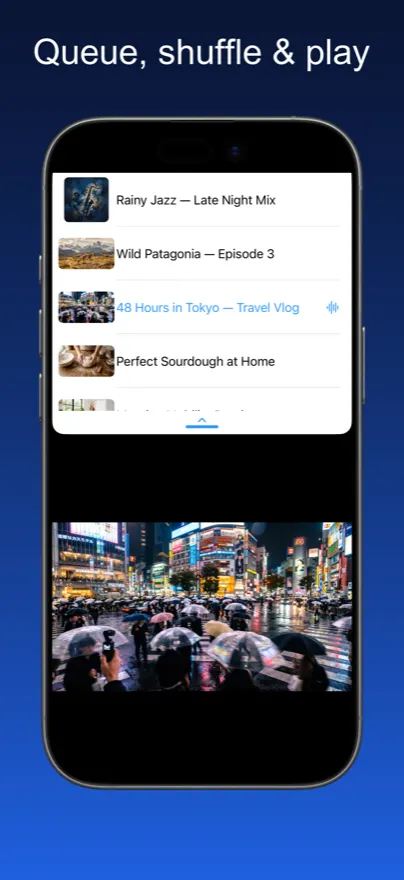
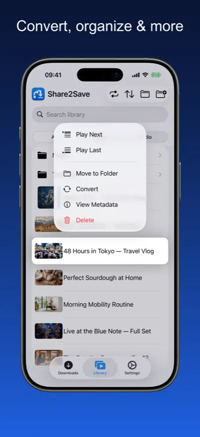
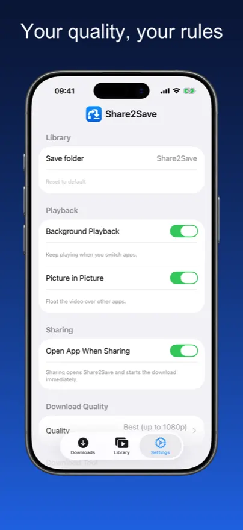

Your Offline Media Library.
Built from Any Link.
Save videos and audio from any link into your personal library and watch them anytime, anywhere — no buffering, no data connection needed.
Your Offline Media Library
Real app screenshots — save a link, watch it offline, manage your library.







From Link to Library in 3 Taps

Tap Share
In Safari, Chrome, or Firefox, tap the share button and select Share2Save from the share sheet.
It Downloads
Share2Save downloads the video or audio in the background, even after you close the app.
Watch Offline
Open your library anytime — no internet needed. Resume exactly where you left off.
Built for Offline. Built for Privacy.
Every feature was designed for one goal: your media, available when you need it.
Personal Media Library
Browse all saved content in a clean library with separate Video and Audio tabs. Resume exactly where you stopped.
One Tap to Save
Share any video or audio URL from Safari, Chrome, or Firefox directly to Share2Save. Download starts immediately.
Background Downloads
Downloads continue while you switch apps, lock your screen, or do anything else. Your download won’t be interrupted.
Lock Screen Widget
A Live Activity widget shows real-time download progress directly on your Lock Screen. Requires iOS 16.2+.
Picture in Picture
Pop the video into a floating overlay and keep watching while you use other apps. Multitask without missing a second.
Quality Control
Choose best available, 1080p MP4, 720p, or audio-only. Set it once in Settings and every download respects your preference.
Privacy First
No account required. No ads. No tracking. Everything is stored locally on your device — nothing is uploaded or shared.
Everything You Need, Nothing You Don’t
Your Media. Your Device. Your Rules.
No cloud. No subscription. No compromise.
Works on Airplanes
Download before you fly and watch entire playlists at 35,000 feet without paying for Wi-Fi.
Saves Mobile Data
Download once on Wi-Fi, watch forever without burning your mobile data plan.
Full-Screen Experience
Immersive full-screen playback with Picture in Picture support for true multitasking.
Zero Tracking
No analytics, no data sent anywhere. Your viewing habits are your business, not ours.
Instant Playback
No buffering, no loading spinners. Files play from local storage at full speed, instantly.
Available in 10+ Languages
The app is fully localized so the interface feels native wherever you are in the world.
Frequently Asked Questions
Share2Save works with a broad range of video and audio URLs — including YouTube, Vimeo, and many podcast and media feeds. DRM-protected platforms (like Netflix or Spotify) cannot be downloaded, as their content is encrypted. Share2Save is designed for content you have the right to access.
Yes. Share2Save uses iOS Background URL Session technology so downloads continue even when you switch apps or lock your screen. On iOS 16.2 and later, a Live Activity widget on your Lock Screen shows real-time download progress.
Entirely up to you. Choose quality settings to balance file size and quality: 1080p MP4 for the best quality, 720p for a middle ground, or audio-only for minimal storage. You can delete saved files at any time.
Completely local. Share2Save requires no account and sends no data anywhere. Downloaded files are stored entirely on your device and never uploaded or shared. Nothing leaves your phone.
Yes — that is the entire point. Once a file is downloaded, it is available indefinitely with no internet connection. Perfect for flights, commutes, or anywhere you have limited data.
Yes. No subscription, no in-app purchases, no ads. Share2Save is completely free.
Your Media. Everywhere. Offline.
Download Share2Save for free on iPhone and iPad.
Download on the App StoreFree · iPhone & iPad · iOS 16+